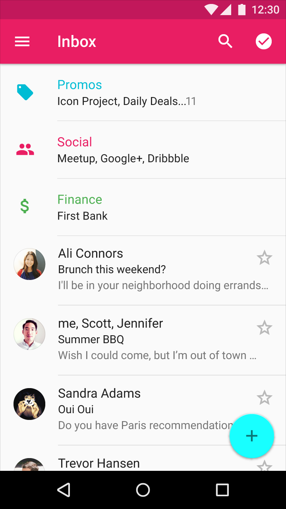
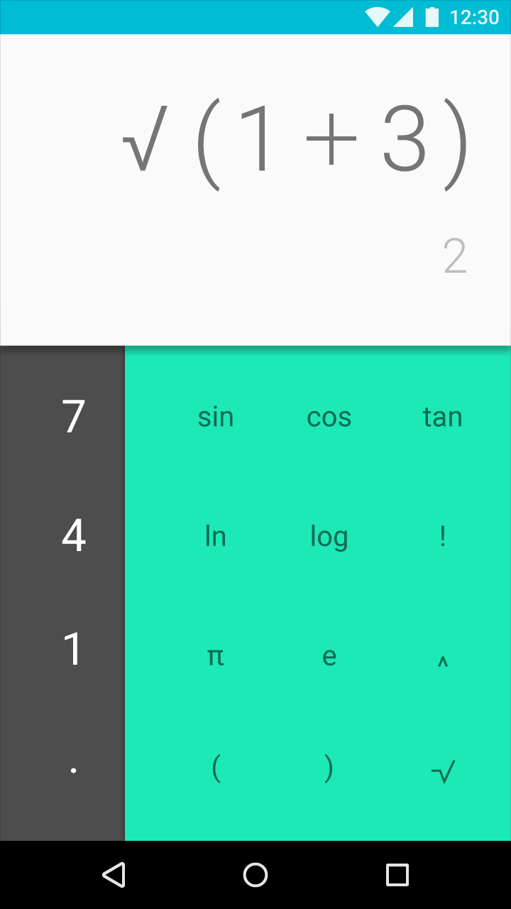

당신의 앱을 통한 네비게이션은 직관적이며 예측 가능해야 합니다. 새로운 사용자 뿐만 아니라 다시 사용하는 사용자도 쉽게 당신의 앱을 통해 이동하는 방법을 이해할 수 있어야 합니다.
사용자가 하나의 뷰에서 그 다음으로 이동할 때, 사용자는 이미지, 액션, 그리고 내용물이 들어 있는 화면을 관찰합니다. 이러한 화면은 들어 있는 내용물에 관한 스토리를 전하기 위해 함께 일하며, 어느 액션을 강조하는 경로(Path)로 사용자를 인도합니다.
상태 사이의 이동에 대한 정보를 얻기 위해서, 네비게이션 전환을 확인하십시오.
관계 & 상황을 전달하십시오
항목 사이에 명확한 관계를 보여 주는 논리적이고 연관 가능한 덩어리로 내용물을 그룹화하십시오.
액션을 분명히 하십시오.
특정한 선택이나 더 자유로운 탐색을 권장하는 경로(Path)를 사용하여 한 화면에서 그 다음으로 사용자를 안내하십시오.
관심에 초점을 맞추십시오.
당신의 앱의 네비게이션을 중요한 내용물과 작업의 홍보에 맞추십시오.

이 이미지는 다음과 같은 무리(Cluster)로 그룹화함으로서 이메일 항목 사이에 관계를 보여 줍니다: 홍보, 소셜, 재무

사용자의 필요가 단순할 때, 단순한 디자인과 가벼운 구조를 사용하십시오.